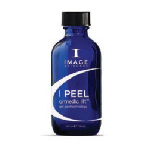
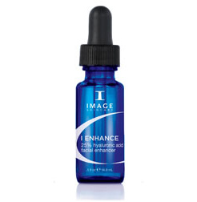

Dołącz do nas na:
{kind=link}
{kind=link}
{kind=link}
{kind=link}
Wykonywane zabiegi
Oraz przydatne informacje
Dbanie o urodę bez wykorzystania radykalnych metod (jak operacje czy inwazyjne zabiegi z użyciem lasera) wymagają systematyczności i kompleksowego podejścia. Jednorazowa wizyta w gabinecie kosmetologicznym z pewnością poprawi doraźnie wygląd naszej cery, jednak osiągnięcie pożądanego rezultatu wymaga regularnej pielęgnacji – zarówno w gabinecie kosmetologicznym, jak i w domowym zaciszu. Bazując na kosmetykach dobranych przez eksperta mamy większą szansę
I PEEL ormedic lift

Zabieg eksfoliacyjny, w którym wykorzystano właściwości enzymów roślinnych. Organiczny kompleks zawiera papaję, ananas oraz dynię, których miąższ zawiera enzymy o działaniu proteolitycznym. Preparat bardzo delikatnie złuszcza i lekko rozjaśnia skórę. Produkt oprócz enzymów zawiera także, komórki macierzyste Żywokostu Lekarskiego i bardzo silne antyoksydanty – ekstrakt z zielonej herbaty oraz ubichinon. Dzięki temu zapewnia skórze wzmocnienie i ochronę jej struktur przed szkodliwym działaniem wolnych rodników. Pobudza odnowę komórkową naskórka, pomaga nawilżyć skórę i stymuluje ją do regeneracji, a dodatkowo zapewnia ochronę antyoksydacyjną.
Wszystkie rodzaje skóry, szczególnie skóra wrażliwa, odwodniona, osób palących papierosy, przemęczonych. Również dla kobiet w ciąży.
Organiczny aloes w postaci żelu - Nośnik/Baza
30% Miąższ z dyni- Złuszczające
15% kompleks: Papai, Marakui, Ananasa, Polipeptydów
Złuszczające, stymulujące i wzmacniające.
Roślinne komórki macierzyste (PhytoCellTec™ Solar Vitis-żywokost)- Chronią i regenerują komórki skóry.
I PEEL Signature Facelift
I PEEL the Signature Facelift™ to jedyny taki zabieg na świecie! Peeling bazujący m.in. na witaminie C, kwasach AHA oraz komórkach macierzystych, który już po jednokrotnym zastosowaniu poprawia kondycję skóry, gwarantując delikatne złuszczenie naskórka oraz działanie lekko rozjaśniające. Jego niezwykłą cechą jest stymulujący wpływ na produkcję kolagenu oraz wzmocnienie mikrokrążenie. Zabieg, dzięki wykorzystaniu kwasu hialuronowego, polipeptydów oraz wyciągów roślinnych ma silne działanie antyoksydacyjne i wzmacniające.
Zdaniem osób, które poddały się zabiegowi I PEEL the Signature Facelift™, skóra twarzy po zabiegu jest rozświetlona oraz niezwykle delikatna w dotyku. Wyraźnie widać także, że jest wygładzona oraz bardziej napięta i promienna.
Zabieg polecany jest dla osób, które borykają się z trądzikiem różowatym, rumieniem, odwodnieniem i wrażliwością skóry, poszarzeniem skóry (palacze), przebarwieniami, po zabiegach chirurgii plastycznej. Również dla kobiet w ciąży.
Z trądzikiem różowatym, rumieniem, mocno odwodniona, wrażliwa, poszarzała, z przebarwieniami, zmęczona, osób palących, po zabiegach chirurgii plastycznej. Również dla kobiet w ciąży.
I PEEL acne lift®
Połączenie kwasu salicylowego z glikolowym i komórkami macierzystymi Lilaka pospolitego. Działa wspomagająco w leczeniu trądziku o dowolnym nasileniu i redukcji łojotoku. Ponadto wygładza skórę. Kwas salicylowy ma właściwości keratolityczne i dodatkowo wpływa redukująco w stosunku do aktywności wydzielniczej gruczołów łojowych. Kwas glikolowy jako mała cząsteczka, penetruje głęboko dając możliwość lepszego odblokowania zrogowaciałych ujść gruczołów łojowych, co z kolei wspomaga oczyszczanie mechaniczne skóry.
Skóra tłusta, przetłuszczająca się, z problemami trądzikowymi, z oznakami starzenia.
Organiczny aloes w postaci żelu - Nośnik/Baza
20% mieszanka:Kwasu salicylowy, Kwas glikolowy
Złuszczające (BHA), Złuszczające (AHA)
Dermasyr™ (komórki macierzyste Lilaka Pospolitego)- Redukuje stany zapalne, powstrzymuje rozwój trądziku i produkcję melaniny.
Wzmacniacz: 25% hyaluronic acid facial enhancer - Kwas hialuronowy

Kwas hialuronowy wskazany dla cer Przesuszonych, odwodnionych, dojrzałych, z trądzikiem różowatym Kluczowy składnik 25% kwas hialuronowy.
Kluczowy składnik: 25% kwas hialuronow.
Skóra tłusta, przetłuszczająca się, z problemami trądzikowymi, z oznakami starzenia.
Silne nawilżanie.
Wzmacniacz: 25% anti-oxidant facial enhancer - Antyoksydant
Antyoksydant wskazany dla cer Wrażliwych, po zabiegach kosmetycznych.
Kluczowe składniki: 25% kompleks antyoksydantów
Wskazany dla cer wrażliwych, po zabiegach kosmetycznych.
Działanie odbudowujące, regenerujące, łagodzące
Wzmacniacz: 25% retinol facial enhancer - Retinol
Retinol wskazany dla cer ze zmarszczkami, przebarwieniami
Kluczowe składniki: 25% retinol.
zmarszczki, przebarwienia
Odbudowa kolagenu
Wzmacniacz: 25% kojic acid facial enhancer - Kojowy
Kojowy wskazany dla cer z przebarwieniami i uszkodzeniami posłonecznymi
Kluczowy składnik 25% kwas kojowy
wskazany dla cer z przebarwieniami i uszkodzeniami posłonecznymi
Działanie rozjaśniające
Wzmacniacz: 25% vitamin c facial enhancer - Witamina C
Witamina C wskazany dla cer z trądzikiem różowatym, stanami zapalnymi, przesuszonych, odwodnionych, dojrzałych
Kluczowy składnik 25% witamina C
Wskazany dla cer z trądzikiem różowatym, stanami zapalnymi, przesuszonych, odwodnionych, dojrzałych
Działanie antyoksydacyjne i ochronne
Wzmacniacz: 25% stem cell facial enhancer - Komórki macierzyste
Komórki macierzyste wskazany dla cer dojrzałych, ze zmarszczkami, z objawami fotostarzenia
25% kompleks komórek macierzystych jabłoni, nasion winogron, arganowca, wierzbówki kiprzycy
wskazany dla cer dojrzałych, ze zmarszczkami, z objawami fotostarzenia
Ochrona komórek macierzystych skóry
Dermalift - Medycyna Estetyczna & Kosmetologia ©
Korzystając ze strony akceptujesz pliki cookies.